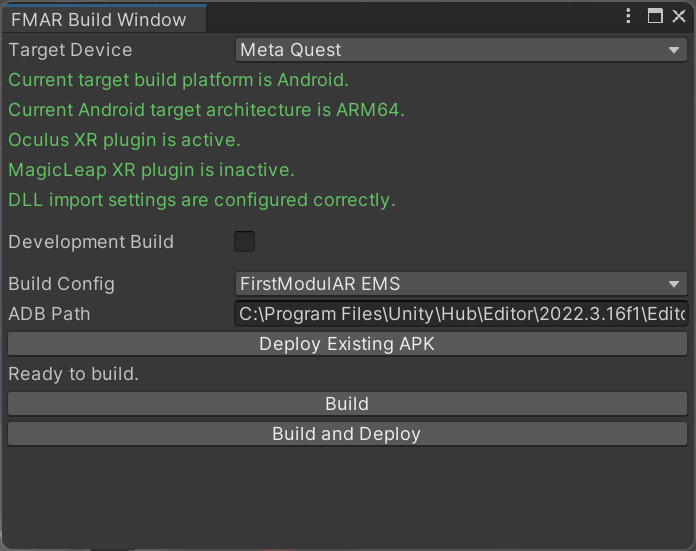
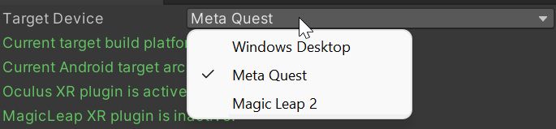
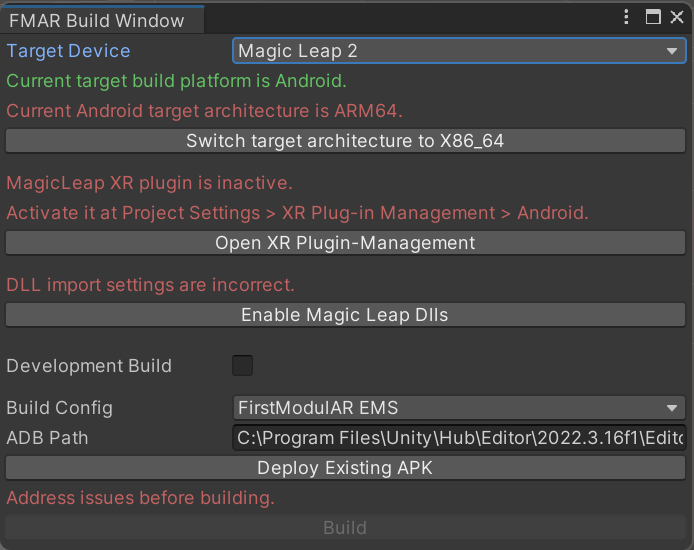
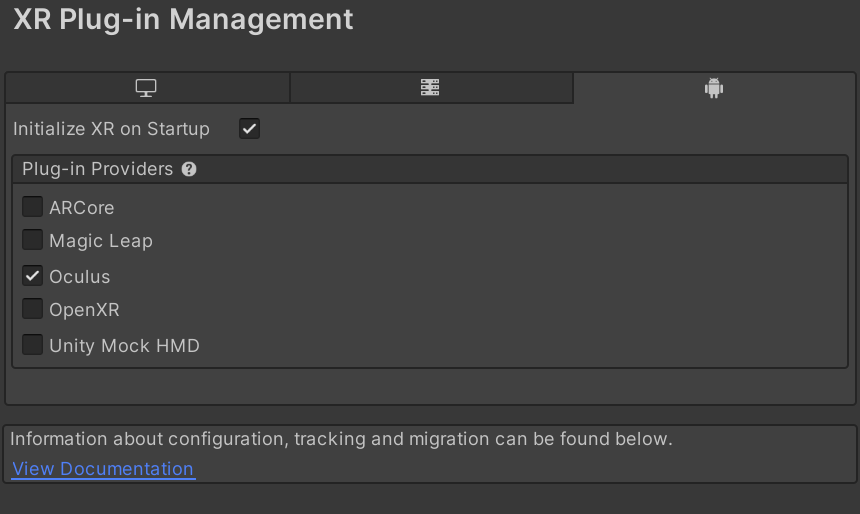
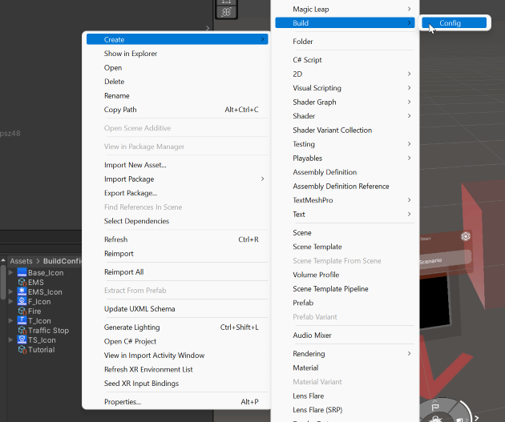
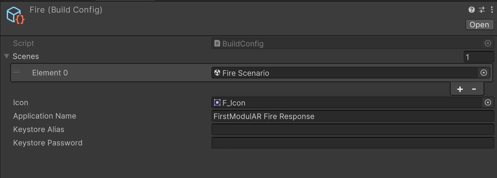

The FMAR Build Window package provides a helpful set of build tools that are practically a necessity when creating a multi-platform AR/VR project.
Build Window

The FMAR Build Window effectively replaces Unity's built-in build window, with enhanced functionality for multi-platform AR/VR builds.

First, we have the "Target Device" dropdown. Selecting a target device will trigger the window to inform you of anything that is currently incorrectly configured for the selected device.

Until the build issues have been addressed, you will be unable to build for the selected platform. Fortunately addressing the issues can often be fixed automatically with the push of a button, but others require manual intervention, such as setting the active plugin.
Doing this will require you to manually check the box for the target XR plugin in XR Plugin Management.

Additional fields of importance include:
- Development Build: This will make the build a "debug" build. This includes functionality such as "Allow Debugging", "Connect with Profiler" and "Development" which are explained in detail here: https://docs.unity3d.com/Manual/BuildSettings.html.
- Build Config: This is a critical option that is populated based on user-defined build configs created in the Assets/BuildConfigs folder in the project. Build configs are explained in more detail below.
- ADB Path: An optional field that only applies to Android builds, assigning the ADB path to a valid path allows you to use the "Deploy Existing APK" and "Build and Deploy" options. This is just a shortcut to not require manual installation of the APK file on the target device.
- Deploy Existing APK: If ADB path is configured, pressing this button will attempt to deploy the last built APK for the selected device and config to the connected headset.
- Build: The most important button here, "Build" will generate the apk/exe for the selected target device and build config.
- Build and Deploy: Combines the functionality of "Build" and "Deploy Existing APK"
Build Config
Build configs are a critical piece of the FMAR Build pipeline. That said, build configs are very simple config files containing only a small number of fields. The purpose behind build configs is to allow exporting multiple unique builds from the same project, instead of requiring different projects for each build.


- Scenes: The scenes in this list will be included in the build. The first scene in the list will be launched when the application starts, as the default scene.
- Icon: This Icon will replace the icon in "Project Settings > Player > Default Icon", displaying wherever the application icon is displayed on the target platform.
- Application Name: This should be unique for each build config. The application name is used to name the build file, as well as give the application a descriptive name for whatever platform it is built for.
- Keystore Alias / Keystore Password: These fields are required for android-based platforms. While not typically required as part of the build process, providing a keystore with unique credentials prevents apk installation issues caused by building the same apk on multiple different machines. Android does not allow two builds of the same apk to be installed on the same device if they were signed using a different keystore for security reasons. More information on Android Keystores can be found here.